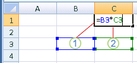

When you create a simple formula or a formula by that uses a function, you can refer to data in worksheet cells by including cell references in the formula arguments. For example, when you enter or select the cell reference A2, the formula uses the value of that cell to calculate the result. You can also reference a range of cells.
Click the cell in which you want to enter the formula.
In the formula bar , type = (equal sign).
Do one of the following, select the cell that contains the value you want or type its cell reference.
You can refer to a single cell, a range of cells, a location in another worksheet, or a location in another workbook.
When selecting a range of cells, you can drag the border of the cell selection to move the selection, or drag the corner of the border to expand the selection.

1. The first cell reference is B3, the color is blue, and the cell range has a blue border with square corners.
2. The second cell reference is C3, the color is green, and the cell range has a green border with square corners.
Note: If there is no square corner on a color-coded border, the reference is to a named range.
Press Enter.
Tip: You can also enter a reference to a named cell or range.
Copy the example data in the following table, and paste it in cell A1 of a new Excel worksheet. For formulas to show results, select them, press F2, and then press Enter. If you need to, you can adjust the column widths to see all the data. Use the Define Name command (Formulas tab, Defined Names group) to define "Assets" (B2:B4) and "Liabilities" (C2:C4).
|
Department |
Assets |
Liabilities |
|---|---|---|
|
IT |
274000 |
71000 |
|
Admin |
67000 |
18000 |
|
HR |
44000 |
3000 |
|
Formula |
Description |
Result |
|
'=SUM(Assets) |
Returns the total of the assets for the three departments in defined name "Assets," which is defined as the cell range B2:B4. (385000) |
=SUM(Assets) |
|
'=SUM(Assets)-SUM(Liabilities) |
Subtracts the sum of the defined name "Liabilities" from the sum of the defined name "Assets." (293000) |
=SUM(Assets)-SUM(Liabilities) |